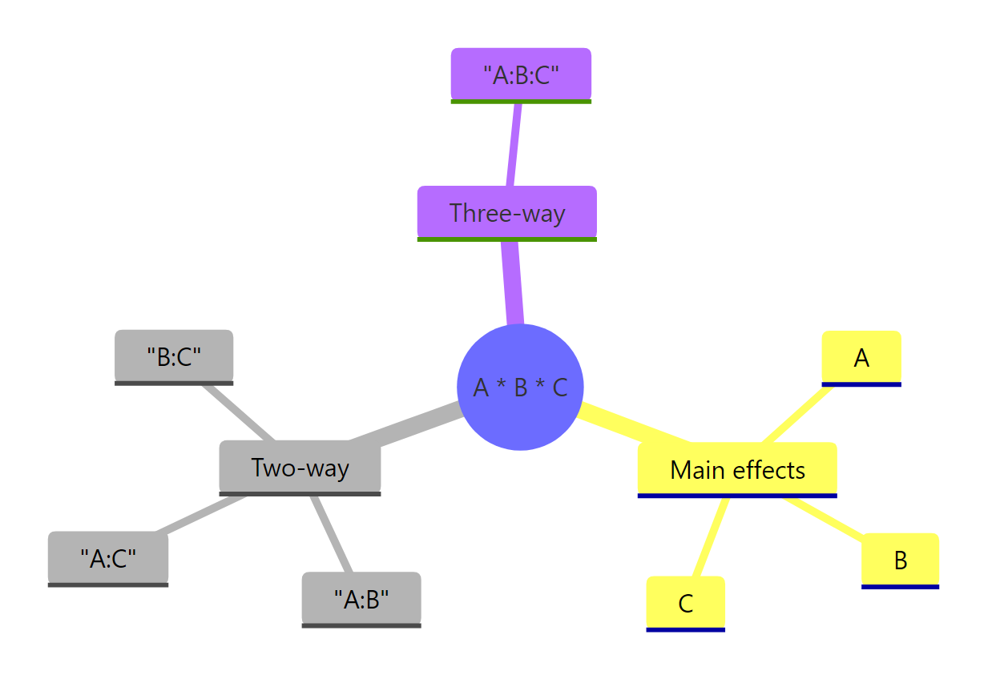
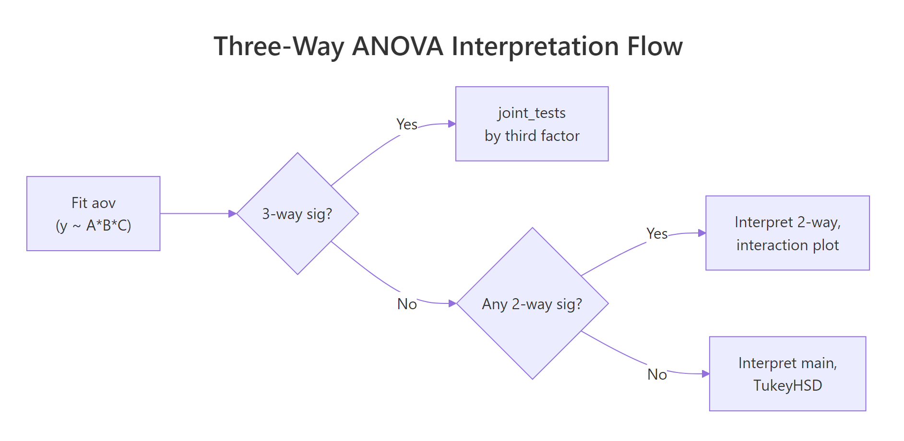

Three-Way ANOVA in R: Higher-Order Factorial Designs
Three-way ANOVA extends two-way ANOVA to three categorical factors at once, fit in R with aov(y ~ A B C, data = d) to produce seven F-rows: three main effects, three two-way interactions, and one three-way interaction. The three-way interaction A:B:C is the new piece; it asks whether the pattern of the A:B interaction itself depends on the level of C, and a significant one changes how you interpret everything above it.
How do you fit a three-way ANOVA in R?
The built-in npk dataset captures a classic 2×2×2 factorial experiment in agricultural science: 24 plots across 6 blocks, each treated with or without nitrogen, phosphate, and potassium, with pea yield in pounds recorded per plot. One aov() call with the A * B * C formula gives you every main effect, every two-way interaction, and the three-way interaction in a single table.
Only nitrogen (N, p = 0.024) is significant at the 5% level, with potassium (K, p = 0.097) showing a weak trend. The three-way N:P:K interaction sits at p = 0.90, and every two-way interaction is far from significant too. That means the effect of adding nitrogen does not depend on whether phosphate or potassium is present, so you can step top-down through the table and settle on a simple story: nitrogen helps yield, the others do not.

*Figure 1: The seven model terms produced by the A * B * C formula: three main effects, three two-way interactions, and one three-way interaction.*
A * B * C is identical to A + B + C + A:B + A:C + B:C + A:B:C. Adding a third factor adds four new terms beyond the two-way case (one new main effect, two new two-way interactions, and one three-way interaction), so interpretation complexity grows fast.Try it: Fit an additive-only model on npk_df (main effects only, no interactions) and compare its residual degrees of freedom with the full factorial fit. Which has more, and why?
Click to reveal solution
Explanation: The additive model absorbs the four interaction terms' degrees of freedom into the residual pool (20 = 16 + 4). If the interactions are truly absent, this boosts statistical power for main effects. But if a real interaction exists and you leave it out, those effects leak into the residual and bias the F-tests.
What does the three-way interaction mean, and how do you visualize it?
A two-way interaction tells you the effect of one factor depends on the level of another. A three-way interaction adds one more level of conditionality: A:B:C means "the way A and B interact depends on C." The cleanest visualization is a faceted interaction plot, one panel per level of C, showing how the A×B relationship shifts across panels.
In the K=0 panel, the two lines (P=0 and P=1) are nearly parallel, suggesting little N×P interaction. In the K=1 panel, the pattern is similar enough that no three-way effect pops out. If the two panels had looked dramatically different, say lines crossing steeply on one side but parallel on the other, you would expect a significant N:P:K term in the ANOVA table. That parallel match across panels is the visual counterpart of the p = 0.90 we saw earlier.
N × P × K) is visually noisy. Two panels with two lines each isolate the comparison readers care about: is the A:B shape the same, or different, at each level of C?Try it: Re-make the faceted plot but facet by N instead of K, put K on the x-axis, and keep P as the color. Does the same story appear?
Click to reveal solution
Explanation: Viewing the same data with a different factor on the x-axis is a useful sanity check. If one layout suggests a strong three-way effect but another does not, the apparent interaction is probably noise rather than a real pattern.
How do you decompose a significant three-way interaction?
The npk three-way interaction was not significant, but in real analyses it often is. To show you the decomposition workflow, let us simulate a 2×2×2 design with a baked-in three-way effect: an A×B interaction that only appears when C is set to its "treatment" level.
Every term is significant because the simulated effect is concentrated in a single cell (A=hi, B=on, C=trt), so it feeds into many interaction terms at once. That is exactly when a three-way interaction is most informative: it signals that a single pairwise story does not tell the whole truth. The next step is to decompose the A:B:C term by running simple two-way ANOVAs within each level of C (the factor you pick as the "moderator").
Under C = ctrl, nothing is significant: A and B and their interaction all sit near p = 1. Under C = trt, A, B, and the A:B interaction are all highly significant. The three-way term fires precisely because the A:B story is completely different across the two levels of C. That is the textbook interpretation: a significant three-way interaction means pairwise patterns are not homogeneous across the third factor.

Figure 2: Top-down decision flow for interpreting a three-way ANOVA: test the three-way interaction first, then fall back to two-way interactions, then main effects.
by factor using the full model's error term, which preserves degrees of freedom and avoids the bias of refitting on each subset. Pick as the by factor whichever level you want to hold constant in your narrative ("among treated plots, how does A interact with B?").Once the simple two-way is pinned down, you often want to know where inside the A × B × C cube the action is. Pairwise contrasts from emmeans show the specific cell-mean differences that drive the effect.
The last row tells the whole story: when B = on and C = trt, A = hi is about 10 points higher than A = lo (p < 0.0001). Every other cell combination shows a contrast indistinguishable from zero. So the three-way interaction is driven by a single corner of the cube, exactly the corner we programmed in the simulation. This is the level of detail a stakeholder usually wants after hearing "the three-way is significant."
Try it: Repeat the joint_tests() call but decompose by A instead of C. What do the simple B:C ANOVAs look like inside each level of A?
Click to reveal solution
Explanation: Picking A as the by factor gives the same three-way story from a different angle. Everything is flat when A = lo, and the entire B×C structure lights up when A = hi. Any of the three factors can serve as the moderator; choose whichever aligns with the comparison your audience cares about.
How do you check assumptions for a three-way ANOVA?
Three-way ANOVA carries the same assumptions as two-way: residuals should be approximately normal, variances should be roughly equal across cells, and observations should be independent. The catch is that with eight cells instead of four, each cell holds fewer observations, so per-cell assumption checks get noisier. The practical workflow is a combination of graphical diagnostics from plot(fit) and a single homogeneity-of-variance test across all cells.
The four diagnostic plots from plot(fit) show residuals versus fitted values (check for a flat cloud), a Q-Q plot (check for points near the diagonal), a scale-location plot (check for no systematic trend), and a leverage plot. For the npk fit, the residual cloud looks flat and the Q-Q points hug the line, so the model assumptions appear reasonable. Bartlett's test at p = 0.78 fails to reject equal variances across the eight cells, which is consistent with the plots.
Try it: Run shapiro.test(residuals(fit)) on the npk fit and interpret the result. Is residual normality acceptable?
Click to reveal solution
Explanation: With W = 0.97 and p = 0.59 you fail to reject the null hypothesis of normal residuals. Combined with a clean Q-Q plot from plot(fit), this is standard evidence that the normality assumption is not violated and the p-values from summary(fit) are trustworthy.
What about higher-order (four-way and beyond) factorial designs?
Adding a fourth factor turns A * B * C * D into a 15-term model (4 main effects, 6 two-way, 4 three-way, and 1 four-way). The cell count for a 2-level full factorial grows as 2^k, so 4 factors need 16 cells and 5 need 32. Two things break down fast at higher orders: per-cell sample sizes (unless you scale up the experiment dramatically) and the substantive meaning of top-order terms, which are rarely what a subject-matter expert actually wants to interpret.
The full model has 16 coefficients (intercept plus 15 terms). The (A + B + C + D)^3 shortcut includes every main effect and every interaction up to three-way, but excludes the single four-way term, yielding 15 coefficients. This is the workhorse formula when you want to stay honest about potentially real three-way effects without claiming that the most exotic higher-order interaction is estimable with any precision.
The F-test comparing the two models gives p = 0.62, meaning the four-way interaction contributes nothing beyond the 3-way-and-below model. In most real analyses this is the outcome you see: higher-order interactions are non-significant and visually uninterpretable, so dropping them simplifies your story without costing fit. Only keep a four-way term if both the F-test flags it and you have a substantive hypothesis about why the effect exists.
(A+B+C+D)^2 keeps only main effects and two-way interactions, and (A+B+C+D+E)^3 works the same way for five factors.FrF2 package) and D-optimal designs (see AlgDesign) trim this to a manageable size by aliasing higher-order interactions with main effects you assume are negligible.Try it: Fit y ~ A * B + C * D on sim4 so that A:B and C:D are the only interactions in the model. How many coefficients does this produce?
Click to reveal solution
Explanation: The formula expands to A + B + A:B + C + D + C:D, giving 6 terms plus an intercept, for 7 coefficients total. Selective-interaction formulas are useful when subject-matter knowledge tells you which pairs of factors are likely to interact and which are not, because they keep degrees of freedom in the residual pool and boost power for the terms that matter.
Practice Exercises
Exercise 1: Compare four candidate models with AIC
Fit four candidate aov models on npk_df (yield as the outcome): the full three-way (N * P * K), the two-way-only model ((N + P + K)^2), the additive model (N + P + K), and a selective model with only the N:P interaction (N * P + K). Use AIC() to compare them and save the best one (lowest AIC) to my_best_fit. Print its name and AIC.
Click to reveal solution
Explanation: Lower AIC is better. The additive model wins because none of the interactions are significant; adding them costs degrees of freedom without improving fit enough to offset the penalty. The selective model (n_p_only) is second-best because it only spends df on one interaction term.
Exercise 2: Compute partial eta-squared by hand
Partial eta-squared (η²ₚ) for an effect is SS_effect / (SS_effect + SS_residual), and it tells you the share of variance an effect explains after accounting for everything else in the model. Compute η²ₚ for every term in sim_fit (the 2×2×2 simulated fit) by pulling sum-of-squares out of its ANOVA table, and return a named numeric vector sorted descending. Save the result to my_eta.
Click to reveal solution
Explanation: All seven terms land around η²ₚ = 0.35 because the simulated "high-A, on-B, trt-C" spike feeds into every effect at once. In a well-behaved real experiment where the three-way is the true driver, you typically see A:B:C far above the pairwise terms, which is the quantitative signal that a higher-order interaction is substantively real rather than noisy.
Complete Example: Full three-way analysis of the npk pea-yield experiment
A realistic workflow strings together everything above: fit the full model, check the top-order terms, simplify toward the smallest adequate model, verify assumptions on the chosen fit, and run a post-hoc test on whichever main effects survive.
You walk from 7 effects down to a single main-effect story: applying nitrogen lifts yield by about 5.6 lb/plot on average (95% CI [1.85, 9.38], p = 0.005), while phosphate and potassium have no reliable effect at this sample size. The three-way ANOVA was not just a more complex hammer; it was insurance against missing an interaction that in this dataset happened not to exist. That is the value of running the full model first: you earn the right to tell the simple story because you checked for the complicated ones.
Summary
The table below compresses the interpretation logic into a decision flow you can apply to any three-way ANOVA output.
| When you see in the ANOVA table | What to do next | |
|---|---|---|
| Three-way interaction significant | Decompose with joint_tests(fit, by = C) at each level of C; then `pairs(emmeans(fit, ~ A \ |
B*C))` for specific cell contrasts |
| Three-way not sig, at least one two-way sig | Drop the three-way term and interpret the two-way interaction; faceted interaction plot for visualization | |
| Three-way and all two-way non-sig | Drop to the additive model; TukeyHSD on the significant main effects | |
| Cell sample size below 5 | Bartlett and Shapiro tests are underpowered; rely on plot(fit) graphics |
|
Unbalanced design (table(A,B,C) shows unequal cells) |
Use car::Anova(fit, type = "III") rather than summary(fit) (see the parent two-way ANOVA tutorial) |
|
| Four or more factors | Cap interactions with (A + B + C + D)^3; consider fractional factorial designs for large k |
Three-way ANOVA rewards readers who approach it top-down: test the highest-order term first, fall back only when it is non-significant, and visualize what the numbers mean before writing your conclusion. The emmeans package turns the follow-up into one-liners, so the harder the interaction structure, the more R pays you back for using its grammar.
References
- R Core Team. aov: Fit an Analysis of Variance Model (stats package reference). Link
- R Core Team. npk: Classical N, P, K Factorial Experiment (datasets package). Link
- Lenth, R. V. emmeans: Estimated Marginal Means, aka Least-Squares Means. CRAN vignettes. Link
- Fox, J., & Weisberg, S. An R Companion to Applied Regression, 3rd ed. SAGE (2019). Chapter 8: Fitting Linear Models. Link
- Crawley, M. J. The R Book, 2nd ed. Wiley (2013). Chapter 11: Analysis of Variance. Link
- Montgomery, D. C. Design and Analysis of Experiments, 9th ed. Wiley (2017). Chapters 5 and 6 on factorial designs. Link
- Venables, W. N., & Ripley, B. D. Modern Applied Statistics with S, 4th ed. Springer (2002). Section 6.5: npk example. Link
Continue Learning
- Two-Way ANOVA in R: Main Effects, Interactions, and Interaction Plots Interpreted. The direct foundation for this tutorial; covers Type I vs Type III sums of squares and the
car::Anova()workflow for unbalanced designs. - ANOVA Post-Hoc Tests in R: Tukey, Bonferroni, and Scheffé. After your three-way ANOVA lands on a significant main effect or simple-effect contrast, this tutorial walks through picking the right multiple-comparison correction.
- Repeated Measures ANOVA in R: Correct SE, Mauchly's Test, and Greenhouse-Geisser. When one of your three factors is a within-subjects variable, you need the repeated-measures machinery rather than
aov(y ~ A*B*C).